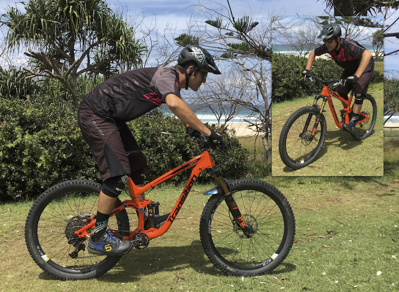
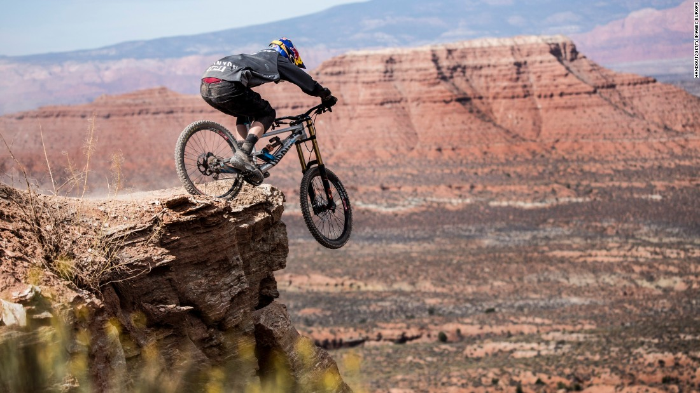
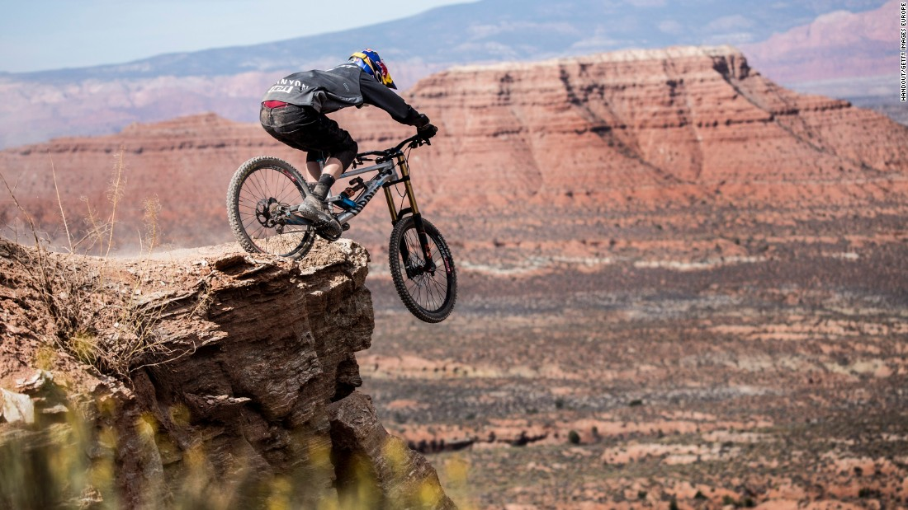

Mountain Biking Skills: THE CORE SKILLS
The core skills that are key to mountain biking are equally as important whether you are new to the sport or a seasoned rider, and they are;
- Body position
- Braking
- Climbing
- Descending
- Cornering
1. Body position explained
Your body position on the bike is really important and one of the key techniques to think about. It directly affects the contact that the bike has with the ground through the wheels, and we want to be in the best position possible to deal with any features that are on the trail ahead.
Attack position
When the trail is flat you’ll probably be sat down, but in an ideal world as soon as it gets a bit technical (bumpy), to make sure you are in this ideal position you should be:
- Stood up on the pedals – so your body weight is over both wheels
- When you’re not pedalling, pedals at the same level (i.e no foot lower than the other) – to avoid snagging on anything.
- Arms and legs bent a little bit at the elbows and knees – to further absorb bumps.
- Looking as far ahead as you can – probably THE most important bit!
- Covering the brakes.
2. How to brake
I’m sure everyone knows HOW to brake, but the skill is in knowing how to apply that. When riding off road it is not as simple as just braking whenever you want. The best way to perfect your technique is to practice on a known trail, so that you can get used to how YOUR brakes feel.
There are a couple of really important things to keep in mind;
- Know which is your front brake and which is your rear brake. If you don’t know, roll the bike in front of you and pull one brake lever – if the rear wheel skids along it’s your rear brake, if the bike stops (and the rear wheel might even bounce up) it’s your front brake.
- As this shows, the front brake does most of the stopping. As a beginner, it is best to use both brakes together. Although the front brake is the most powerful it is vital to avoid pulling it on too sharply.
- Avoid pulling brakes really hard – apply them gently to start with.
- Choose where to brake – it is advisable not to brake on technical parts of the trail, but rather to go into these sections at the speed you want to (i.e brake before them) and to look for somewhere suitable to brake after them. Remember that a rolling wheel will grip better than a braking one!
3. How to climb
In the attack position, your weight is centred over the middle of the bike, helping both the front and the rear wheel grip. As you climb you therefore need to adjust your body position to ensure your weight is kept central.
Climbing:
- As you climb on your bike you will need to move forward to keep your weight over the front wheel of your bike to maintain grip.
- How much depends on how steep the slope if but, if you feel the front wheel lifting slightly, then you are not leaning forward enough!
- It is also important to be in an easier gear BEFORE you start to climb.
- It’s even more important to remember to look ahead and to keep on pedalling!!
4. How to descend
When the trail points downwards it's essential to make some key body adjustments in order to ride the descent in a controlled manner:
- Descending on the bike you will need to keep your weight back.
- Again, how far your weight is back depends on how steep the slope is.
- You should be out of the saddle with your arms stretched out, your saddle in front of you, pedals level, your fingers covering the brakes, and looking ahead.
- If you need to brake to slow your speed, remember to pull the brakes on very gently.
5. How to corner
So, everyone can turn a corner on their bike, right??! Wrong. Cornering is one of the most challenging areas of bike technique to master.
Looking ahead is key
There is one golden rule that will absolutely make it easier to corner on your bike whether you are a complete beginner or an expert – and that is LOOKING AHEAD. It is one of the easiest skills to gain but also one of the easiest things to let slip – and it really does make a difference.As you look around the corner, your head will turn, and this will move your shoulders around too. Combined with turning the bars, this will almost guide your bike around the corner. It can feel a bit strange to be looking around the corner to start with, but stick with it!
 
